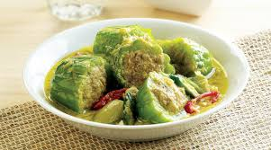

<< Daftar Resep
Kuliner Khas Makassar - Kambuparia
bahan |
bumbu |
cara membuat

Kambu Paria khas Makassar
Bahan- bahan :
- 600 gram ikan tongkol
- Minyak goreng untuk menumis
- 2 kuning telur, kocok
- 750 gram buah paria
- 2 putih telur, untuk olesan
- 5 buah cabe merah, iris serong
- 5 buah cabe hijau, iris serong
- 800 ml santan encer
- 200 ml santan kental, dari 1 butir kelapa
- 10 buah belimbing sayur, belah 2
Bumbu Halus 1 :
- 5 siung bawang putih
- 5 butir bawang merah
- 1 sdt ketumbar
- 1 sdt merica
- 1 sdt garam
Bumbu Halus 2 :
- 10 buah bawang merah
- 6 siung bawang putih
- 2 cm lengkuas
- 4 batang serai, iris
- 1 sdt garam
Cara Masak :
- Kukus ikan, ambil dagingnya, lumatkan, sisihkan. Sangrai kelapa hingga kuning dan kering. Angkat,sisihkan. Panaskan 1 sdm minyak goreng, tumis bumbu halus I hingga harum, angkat. Campur dengan kelapa sangrai, gerus hingga keluar minyaknya. Campur dengan ikan lumat, masukkan kuning telur. Aduk hingga rata, sisihkan.
- Potong buah paria melintang, tebal 3-4 cm. Rebus hingga setengah masak, angkat. Buang bijinya hingga paria berlubang di tengah. Olesi bagian dalamnya dengan putih telur. Isi dengan adonan ikan hingga penuh dan padat. Sisakan ± 2 sdm adonan ikan.
- Panaskan 2 sdm minyak, tumis bumbu halus II hingga harum. Masukkan cabe iris dan santan encer, didihkan. Masukkan paria isi, masak hingga matang, masukkan sisa adonan ikan, belimbing sayur, santan kental, timba-timba santan. Setelah mendidih, angkat.
- Hidangkan
Kembali ke atas
<< Daftar Resep